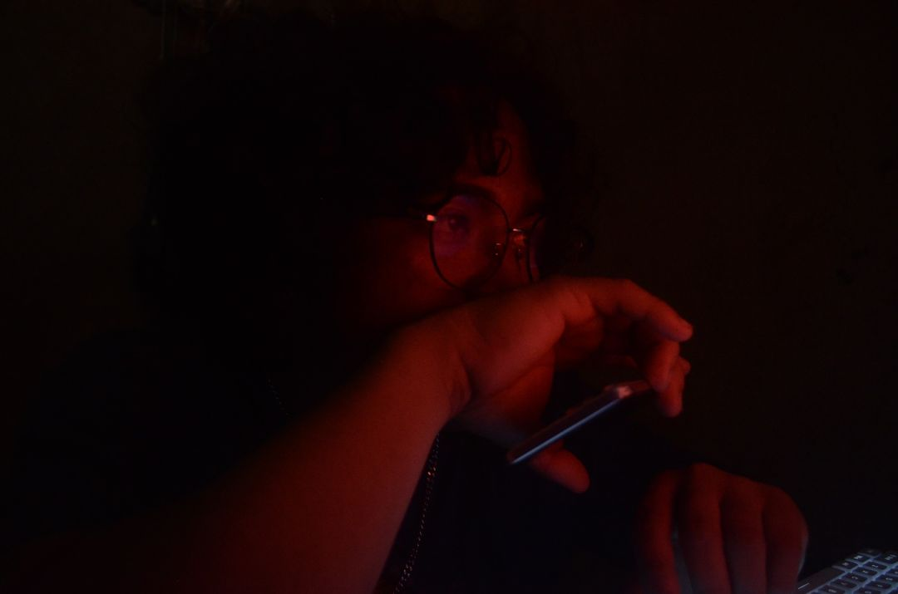

Work Experiences
-

Customer Support Representative
Wonders Co. | 2022
Assisted restaurant customers
Processed orders
Handled inquiries
Upsell products

Hi, I'm Edgerald Piligrino, the creator of K1do.
I've always been someone who enjoys learning, building, and finding solutions. Whether it's helping a customer solve a problem, designing a website, editing creative content, or supporting a growing business, I enjoy work that creates value and meaningful results.
My professional journey has taken me through customer support, technical support, virtual assistance, team leadership, web design, photography, and content creation. Each experience has helped me develop strong communication skills, adaptability, and a deep understanding of how businesses connect with people.
K1do was created as a reflection of my passion for creativity, technology, and continuous growth. It represents not only the work I do but also the mindset I bring to every project: professionalism, reliability, and a commitment to delivering quality results.
Today, I help businesses and individuals strengthen their online presence, improve customer experiences, and bring their ideas to life through digital solutions and creative work.
I believe every project tells a story, every challenge presents an opportunity, and every client deserves someone they can trust. My goal is simple: to create work that makes an impact while continuing to learn, grow, and build meaningful connections along the way.
Welcome to K1do. I'm glad you're here.
Assisted restaurant customers
Processed orders
Handled inquiries
Upsell products
Email Support
Chat Support
Order Management
Customer Satisfaction
Internet Troubleshooting
Device Support
Problem Resolution
Technical Assistance
Administrative Support
Calendar Management
Email Handling
Data Entry
Research
Agent Training
Performance Monitoring
Team Coordination
Process Improvement
Landing Pages
Website Updates
Business Websites
Basic Front-End Development